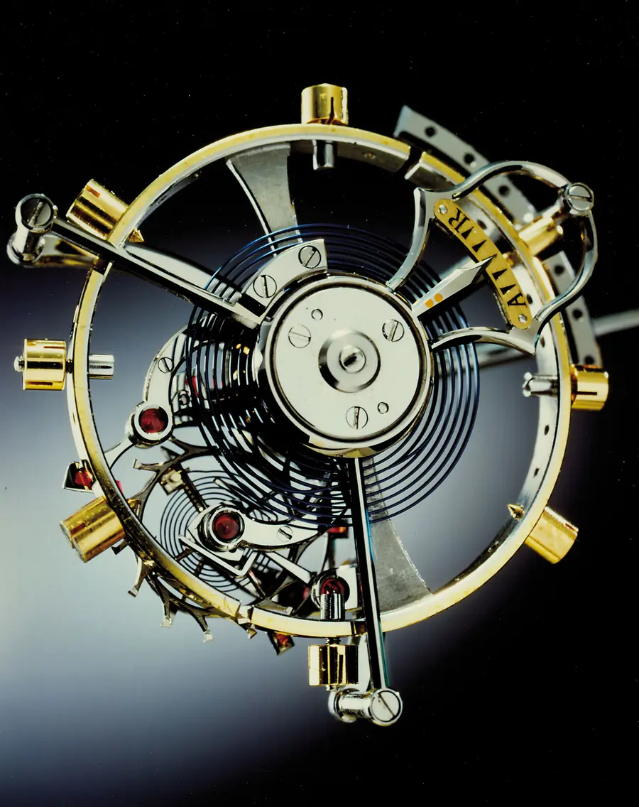
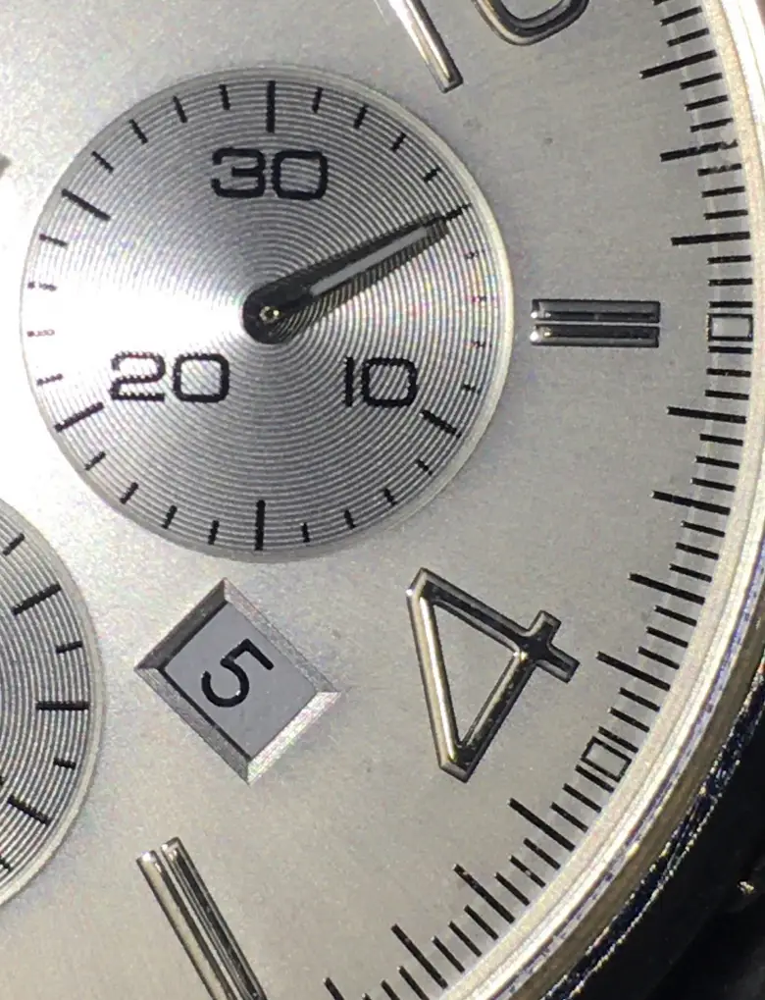

Grade 5 Titanium & Platinum
Aerospace titanium combining ultralight wrist comfort with exceptional tensile strength, paired alongside heavy solid 950 platinum alloys.
STACKLY was founded on a singular conviction: that in an era of ephemeral disposable electronics, mechanical horology remains the enduring sanctuary of human ingenuity and timeless design.
Conceived as an independent boutique atelier, STACKLY unites contemporary micro-computational engineering with centuries of artisanal hand-finishing traditions.
We rejected mass-scale industrial shortcuts. Instead, our atelier adheres to the historical principle of single-watchmaker assembly: from the initial sorting of ruby pivots to the final chronometer regulation, each reference is brought to life under the focused devotion of a master craftsman.
True luxury is quiet, deliberate, and uncompromising. It commands reverence through balanced proportion, material integrity, and mechanical permanence.
No circuit boards, batteries, or software updates. Our calibers are powered solely by physical kinetic laws that will function identically a century from today.
Through openworked skeleton architectures, we invite patrons into the beating heart of mechanical time, celebrating every meshing pinion and gear.
We treat time measurement as an exacting science. Every balance spring is adjusted in six distinct physical positions to negate positional gravitational deviation.
Our aesthetic language draws inspiration from classical architectural proportion and modern brutalist essentialism. We eschew superfluous decoration, allowing the nobility of raw metals and the geometric logic of the movement to govern form.
Case silhouettes feature satin-brushed chamfers contrasted against mirror-polished bezels. Every facet catches light deliberately, creating a tactile presence that slips gracefully beneath tailored cuffs.

We select solely inert, hypoallergenic, and structurally supreme metallurgy engineered to resist corrosion and wear.

Aerospace titanium combining ultralight wrist comfort with exceptional tensile strength, paired alongside heavy solid 950 platinum alloys.

Sintered under 2,000 bars of pressure to achieve a diamond-like hardness of 1,500 Vickers, impervious to scratching and UV fading.

Over 180 hours of meticulous hand-anglage per movement using gentian wood pegs and diamond paste to generate mirror reflections.
Every STACKLY caliber must undergo our proprietary 500-hour quality protocol prior to dispatch. We simulate years of real-world environmental stress, subjecting movements to multi-axis shocks, temperature swings from 0°C to 45°C, and water pressure chambers.
Daily timing tolerances are regulated within chronometric margins of -2/+2 seconds, surpassing standard industry benchmarks to ensure unyielding reliability on the patron’s wrist.
A chronicle of horological exploration, micromechanical patents, and atelier milestones.
Founding of the independent STACKLY high-precision workshop with a core focus on skeletonized openwork micromechanics and noble metallurgy.
Successful realization of our first single-axis flying tourbillon carriage weighing merely 0.28 grams in Grade 5 titanium without an upper bridge.
Introduction of sintered obsidian ceramics and solid 950 platinum three-part cases, establishing our signature monochromatic design language.
Unveiling of the Celeste Moonphase and Imperium Perpetual Calendar, mechanically programmed to account for leap years through secular year 2100.
Global debut of the limited-edition CHRONOS TYPE-0 reference, uniting our flying tourbillon architecture with international salon allocations.
Principles that govern our daily atelier conduct and the lifelong relationship we maintain with every patron.
Every timepiece is recorded into our permanent archive ledger with its unique serial number, guaranteeing authenticity across secondary generations.
Our metals and alligator leathers are ethically sourced from certified distributors adhering to strict international conservation covenants.
Dedicated personal client advisors coordinate private salon viewings, custom strap dimensions, and complimentary insured worldwide transport.
Experience our complete catalog of precision timepieces and find the reference that will measure your next chapter.